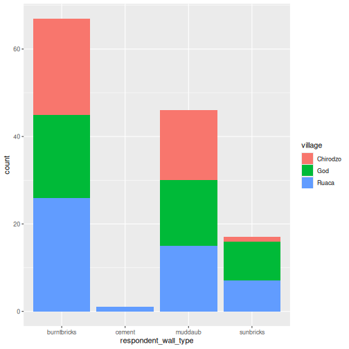

Content from Introduction to R and RStudio
Last updated on 2026-02-17 | Edit this page
Overview
Questions
- Why should you use R and RStudio?
- How do you get started working in R and RStudio?
Objectives
- Understand the difference between R and RStudio
- Describe the purpose of the different RStudio panes
- Organize files and directories into R Projects
Acknowledgement
This workshop was adapted using material from the Data Carpentry lessons R for Ecologists, specifically introduction-r-rstudio.
Other Materials
What are R and RStudio?
R refers to a programming language as well as the software that runs R code.
RStudio is a
software interface that can make it easier to write R scripts and
interact with the R software. It’s a very popular platform, and RStudio
also maintains the tidyverse series of
packages we will use in these workshops.
Why learn R?
You’re working on a project when your advisor suggests that you begin working with one of their long-time collaborators. According to your advisor, this collaborator is very talented, but only speaks a language that you don’t know. Your advisor assures you that this is ok, the collaborator won’t judge you for starting to learn the language, and will happily answer your questions. However, the collaborator is also quite pedantic. While they don’t mind that you don’t speak their language fluently yet, they are always going to answer you quite literally.
You decide to reach out to the collaborator. You find that they email you back very quickly, almost immediately most of the time. Since you’re just learning their language, you often make mistakes. Sometimes, they tell you that you’ve made a grammatical error or warn you that what you asked for doesn’t make a lot of sense. Sometimes these warnings are difficult to understand, because you don’t really have a grasp of the underlying grammar. Sometimes you get an answer back, with no warnings, but you realize that it doesn’t make sense, because what you asked for isn’t quite what you wanted. Since this collaborator responds almost immediately, without tiring, you can quickly reformulate your question and send it again.
In this way, you begin to learn the language your collaborator speaks, as well as the particular way they think about your work. Eventually, the two of you develop a good working relationship, where you understand how to ask them questions effectively, and how to work through any issues in communication that might arise.
This collaborator’s name is R.
When you send commands to R, you get a response back. Sometimes, when you make mistakes, you will get back a nice, informative error message or warning. However, sometimes the warnings seem to reference a much “deeper” level of R than you’re familiar with. Or, even worse, you may get the wrong answer with no warning because the command you sent is perfectly valid, but isn’t what you actually want. While you may first have some success working with R by memorizing certain commands or reusing other scripts, this is akin to using a collection of tourist phrases or pre-written statements when having a conversation. You might make a mistake (like getting directions to the library when you need a bathroom), and you are going to be limited in your flexibility (like furiously paging through a tourist guide looking for the term for “thrift store”).
This is all to say that we are going to spend a bit of time digging
into some of the more fundamental aspects of the R language, and these
concepts may not feel as immediately useful as, say, learning to make
plots with ggplot2. However, learning these more
fundamental concepts will help you develop an understanding of how R
thinks about data and code, how to interpret error messages, and how to
flexibly expand your skills to new situations.
R does not involve lots of pointing and clicking, and that’s a good thing
Since R is a programming language, the results of your analysis do not rely on remembering a succession of pointing and clicking, but instead on a series of written commands, and that’s a good thing! So, if you want to redo your analysis because you collected more data, you don’t have to remember which button you clicked in which order to obtain your results; you just have to run your script again.
Working with scripts makes the steps you used in your analysis clear, and the code you write can be inspected by someone else who can give you feedback and spot mistakes.
Working with scripts forces you to have a deeper understanding of what you are doing, and facilitates your learning and comprehension of the methods you use.
R code is great for reproducibility
Reproducibility is when someone else (including your future self) can obtain the same results from the same dataset when using the same analysis.
R integrates with other tools to generate manuscripts from your code. If you collect more data, or fix a mistake in your dataset, the figures and the statistical tests in your manuscript are updated automatically.
An increasing number of journals and funding agencies expect analyses to be reproducible, so knowing R will give you an edge with these requirements.
R is interdisciplinary and extensible
With tens of thousands of packages that can be installed to extend its capabilities, R provides a framework that allows you to combine statistical approaches from many scientific disciplines to best suit the analytical framework you need to analyze your data. For instance, R has packages for image analysis, GIS, time series, population genetics, and a lot more.
R works on data of all shapes and sizes
The skills you learn with R scale easily with the size of your dataset. Whether your dataset has hundreds or millions of lines, it won’t make much difference to you.
R is designed for data analysis. It comes with special data structures and data types that make handling of missing data and statistical factors convenient.
R can read data from many different file types, including geospatial data, and connect to local and remote databases.
R produces high-quality graphics
R has well-developed plotting capabilities, and the
ggplot2 package is one of, if not the most powerful pieces
of plotting software available today. We can learn to use
ggplot2 in future workshops if you wish.
R has a large and welcoming community
Thousands of people use R daily. Many of them are willing to help you through mailing lists and websites such as Stack Overflow, or on the RStudio community.
Since R is very popular among researchers, most of the help communities and learning materials are aimed towards other researchers. Python is a similar language to R, and can accomplish many of the same tasks, but is widely used by software developers and software engineers, so Python resources and communities are not as oriented towards researchers.
Navigating RStudio
We will use the RStudio integrated development environment (IDE) to write code into scripts, run code in R, navigate files on our computer, inspect objects we create in R, and look at the plots we make. RStudio has many other features that can help with things like version control, developing R packages, and writing Shiny apps, but we won’t cover those in this workshop.

In the above screenshot, we can see 4 “panes” in the default layout:
- Top-Left: the Source pane that displays scripts and
other files.
- If you only have 3 panes, and the Console pane is in the top left, press Shift+Cmd+N (Mac) or Shift+Ctrl+N (Windows) to open a blank R script, which should make the Source pane appear.
- Top-Right: the Environment/History pane, which
shows all the objects in your current R session (Environment) and your
command history (History)
- there are some other tabs here, including Connections, Build, Tutorial, and possibly Git
- we won’t cover any of the other tabs, but RStudio has lots of other useful features
- Bottom-Left: the Console pane, where you can
interact directly with an R console, which interprets R commands and
prints the results
- There are also tabs for Terminal and Jobs
- Bottom-Right: the Files/Plots/Help/Viewer pane to navigate files or view plots and help pages
You can customize the layout of these panes, as well as many settings such as RStudio color scheme, font, and even keyboard shortcuts. You can access these settings by going to the menu bar, then clicking on Tools → Global Options.
RStudio puts most of the things you need to work in R into a single window, and also includes features like keyboard shortcuts, autocompletion of code, and syntax highlighting (different types of code are colored differently, making it easier to navigate your code).
Getting set up in RStudio
It is a good practice to organize your projects into self-contained folders right from the start, so we will start building that habit now. A well-organized project is easier to navigate, more reproducible, and easier to share with others. Your project should start with a top-level folder that contains everything necessary for the project, including data, scripts, and images, all organized into sub-folders.
RStudio provides a “Projects” feature that can make it easier to work on individual projects in R. We will create a project that we will keep everything for this workshop.
- Start RStudio (you should see a view similar to the screenshot above).
- In the top right, you will see a blue 3D cube and the words “Project: (None)”. Click on this icon.
- Click New Project from the dropdown menu.
- Click New Directory, then New Project.
- Type out a name for the project, such as `intro_r”
- Put it in a convenient location using the “Create project as a
subdirectory of:” section. We recommend your
Desktop. You can always move the project somewhere else later, because it will be self-contained. - Click Create Project and your new project will open.
Next time you open RStudio, you can click that 3D cube icon, and you will see options to open existing projects, like the one you just made.
One of the benefits to using RStudio Projects is that they
automatically set the working directory to the
top-level folder for the project. The working directory is the folder
where R is working, so it views the location of all files (including
data and scripts) as being relative to the working directory. You may
come across scripts that include something like
setwd("/Users/YourUserName/MyCoolProject"), which directly
sets a working directory. This is usually much less portable, since that
specific directory might not be found on someone else’s computer (they
probably don’t have the same username as you). Using RStudio Projects
means we don’t have to deal with manually setting the working
directory.
There are a few settings we will need to adjust to improve the reproducibility of our work. Go to your menu bar, then click Tools → Global Options to open up the Options window.

Make sure your settings match those highlighted in yellow. We don’t want RStudio to store the current status of our R session and reload it the next time we start R. This might sound convenient, but for the sake of reproducibility, we want to start with a clean, empty R session every time we work. That means that we have to record everything we do into scripts, save any data we need into files, and store outputs like images as files. We want to get used to everything we generate in a single R session being disposable. We want our scripts to be able to regenerate things we need, other than “raw materials” like data.
Organizing your project directory
Using a consistent folder structure across all your new projects will help keep a growing project organized, and make it easy to find files in the future. This is especially beneficial if you are working on multiple projects, since you will know where to look for particular kinds of files.
We will use a basic structure for this workshop, which is often a good place to start, and can be extended to meet your specific needs. Here is a diagram describing the structure that we will end up with as we progress through the workshops:
intro_r
│
└── scripts
│
└── data
│ └── cleaned
│ └── raw
│
└─── images
│
└─── documentsWithin our project folder (intro_r), we first have a
scripts folder to hold any scripts we write. We will also
have a data folder containing cleaned and
raw subfolders. In general, you want to keep your
raw data completely untouched, so once you put data into
that folder, you do not modify it. Instead, you read it into R, and if
you make any modifications, you write that modified file into the
cleaned folder. We also have an images folder
for plots we make, and a documents folder for any other
documents you might produce.
Let’s start making our new script folder. Go to the Files pane (bottom right), and check the current directory. You should be in the directory for the project you just made, in our case “intro_r`. You shouldn’t see any folders in here yet.

Next, click the New Folder button, and type in
scripts to generate your scripts folder. It
should appear in the Files list now. It’s worth noting that the
Files pane helps you create, find, and open files, but
moving through your files won’t change where the working
directory of your project is.
Working in R and RStudio
The basis of programming is that we write down instructions for the computer to follow, and then we tell the computer to follow those instructions. We write these instructions in the form of code, which is a common language that is understood by the computer and humans (after some practice). We call these instructions commands, and we tell the computer to follow the instructions by running (also called executing) the commands.
Console vs. script
You can run commands directly in the R console, or you can write them into an R script. It may help to think of working in the console vs. working in a script as something like cooking. The console is like making up a new recipe, but not writing anything down. You can carry out a series of steps and produce a nice, tasty dish at the end. However, because you didn’t write anything down, it’s harder to figure out exactly what you did, and in what order.
Writing a script is like taking nice notes while cooking- you can tweak and edit the recipe all you want, you can come back in 6 months and try it again, and you don’t have to try to remember what went well and what didn’t. It’s actually even easier than cooking, since you can hit one button and the computer “cooks” the whole recipe for you!
An additional benefit of scripts is that you can leave
comments for yourself or others to read. Lines that
start with # are considered comments and will not be
interpreted as R code.
Console
- The R console is where code is run/executed
- The prompt, which is the
>symbol, is where you can type commands - By pressing Enter, R will execute those commands and print the result.
- You can work here, and your history is saved in the History pane, but you can’t access it in the future
Script
- A script is a record of commands to send to R, preserved in a plain
text file with a
.Rextension - You can make a new R script by clicking
File → New File → R Script, clicking the green+button in the top left corner of RStudio, or pressing Shift+Cmd+N (Mac) or Shift+Ctrl+N (Windows). It will be unsaved, and called “Untitled1” - If you type out lines of R code in a script, you can send them to
the R console to be evaluated
- Cmd+Enter (Mac) or Ctrl+Enter (Windows) will run the line of code that your cursor is on
- If you highlight multiple lines of code, you can run all of them by pressing Cmd+Enter (Mac) or Ctrl+Enter (Windows)
- By preserving commands in a script, you can edit and rerun them quickly, save them for later, and share them with others
- You can leave comments for yourself by starting a line with a
#
Example
Let’s try running some code in the console and in a script. First,
click down in the Console pane, and type out 1+1. Hit
Enter to run the code. You should see your code echoed, and
then the value of 2 returned.
Now click into your blank script, and type out 1+1. With
your cursor on that line, hit Cmd+Enter (Mac) or
Ctrl+Enter (Windows) to run the code. You will see that your
code was sent from the script to the console, where it returned a value
of 2, just like when you ran your code directly in the
console.
- R is a programming language and software used to run commands in that language
- RStudio is software to make it easier to write and run code in R
- Use R Projects to keep your work organized and self-contained
- Write your code in scripts for reproducibility and portability
Content from Introduction to R packages, markdown and notebooks
Last updated on 2026-02-17 | Edit this page
Overview
Questions
- What is an R package?
- How to install R packages?
- What is R Markdown and R Notebooks?
- How can I integrate my R code with text and plots?
- How can I convert .Rmd files to .html?
Objectives
- Understand what an R package is
- Install packages using the packages tab.
- Install packages using R code.
- Understand basic syntax of R Markdown and R Notebooks
Acknowledgement
This workshop was adapted using material from the Data Carpentry lessons R for Social Scientists, specifically lesson 00-intro and lesson 06-rmarkdown.
Other Materials
What are R packages?
R Packages are the fundamental units of reproducible R code. They are collections of reusable R functions, sample data, and the documentation that describes how to use the functions.
What is the difference between base R and packages?
The “base” R package contains the basic functions which let R function as a language:
- Arithmetic
- Input/output
- Basic programming support, etc
The R software is distributed with the base R package
installed. In addition to the base R installation, there are in excess
of 20,000 additional packages which can be used to extend the
functionality of R. Many of these have been written by R users and have
been made available in central repositories, like the one hosted at the
Comprehensive R Archive Network CRAN,
for anyone to download and install into their own R environment.
CRAN is a network of ftp and web servers around the world that store identical, up-to-date, versions of code and documentation for R.
Installing packages using R code and the packages tab
We’ll use the tidyverse and here packages
in this workshop.
You can install these packages from the console by typing the command
install.packages(), or from the packages
tab.
We’ll install tidyverse from the console, and
here from the packages tab.
R
install.packages("tidyverse")
OUTPUT
The following package(s) will be installed:
- tidyverse [2.0.0]
These packages will be installed into "/__w/irim-r-workshops/irim-r-workshops/renv/profiles/lesson-requirements/renv/library/linux-ubuntu-noble/R-4.5/x86_64-pc-linux-gnu".
# Installing packages --------------------------------------------------------
- Installing tidyverse 2.0.0 ... OK [linked from cache]
Successfully installed 1 package in 6 milliseconds.You can see if you have a package installed by looking in the
packages tab (on the lower-right by default). You can also
type the command installed.packages() into the console and
examine the output.

Packages can also be installed from the ‘packages’ tab. On the packages tab, click the ‘Install’ icon and start typing the name of the package you want in the text box. As you type, packages matching your starting characters will be displayed in a drop-down list so that you can select them.

At the bottom of the Install Packages window is a check box to ‘Install’ dependencies. This is ticked by default, which is usually what you want. Packages can (and do) make use of functionality built into other packages, so for the functionality contained in the package you are installing to work properly, there may be other packages which have to be installed with them. The ‘Install dependencies’ option makes sure that this happens.
Exercise
Use the Packages tab to confirm that you have both the
tidyverse and here packages installed.
Scroll through packages tab down to ‘tidyverse’. You can also type a few characters into the searchbox. The ‘tidyverse’ package is really a package of packages, including ‘ggplot2’ and ‘dplyr’, both of which require other packages to run correctly. All of these packages will be installed automatically. Depending on what packages have previously been installed in your R environment, the install of ‘tidyverse’ could be very quick or could take several minutes. As the install proceeds, messages relating to its progress will be written to the console. You will be able to see all of the packages which are actually being installed.
Because the install process accesses the CRAN repository, you will need an Internet connection to install packages.
It is also possible to install packages from other repositories, as well as Github or the local file system, but we won’t be looking at these options in this workshop.
R Markdown and R Notebooks
R Markdown is a flexible type of document that allows you to seamlessly combine executable R code, and its output, with text in a single document.
An R Notebook is a specific interactive execution mode for an R Markdown (Rmd) document. Code chunks are executed independently and interactively within the RStudio editor.
R Markdown documents can be readily converted to multiple static and dynamic output formats, including PDF (.pdf), Word (.docx), and HTML (.html).
The benefit of a well-prepared R Markdown or Notebook document is full reproducibility. This also means that, if you notice a data transcription error, or you are able to add more data to your analysis, you will be able to recompile the report without making any changes in the actual document.
Creating an R Notebook file
To create a new R Markdown document in RStudio, click File -> New File -> R Notebook. You may be prompted to install required packages the first time you do this.
Basic components of an R Notebook
YAML Header
To control the output, a YAML (YAML Ain’t Markup Language) header is needed:
---
title: "My Awesome Report"
output: html_document
---The header is defined by the three hyphens at the beginning
(---) and the three hyphens at the end
(---).
In the YAML, the only required field is the output:,
which specifies the type of output you want. This can be an
html_document, a pdf_document, or a
word_document. We will start with an HTML document and
discuss the other options later.
After the header, to begin the body of the document, you start typing
after the end of the YAML header (i.e. after the second
---).
Markdown syntax
Markdown is a popular markup language that allows you to add
formatting elements to text, such as bold,
italics, and code. The formatting will not be
immediately visible in a markdown (.md) document, like you would see in
a Word document. Rather, you add Markdown syntax to the text, which can
then be converted to various other files that can translate the Markdown
syntax. Markdown is useful because it is lightweight, flexible, and
platform independent.
RStudio provides a real time preview of the formatting- click the
Visual tab to view the rendered markdown, or
Source to view the raw markdown.
Headings
A # in front of text indicates to Markdown that this
text is a heading. Adding more #s make the heading smaller,
i.e. one # is a first level heading, two ##s
is a second level heading, etc. upto the 6th level heading.
# Title
## Section
### Sub-section
#### Sub-sub section
##### Sub-sub-sub section
###### Sub-sub-sub-sub section(only use a level if the one above is also in use)
Formatting
You can make things bold by surrounding the word
with double asterisks, **bold**, or double underscores,
__bold__; and italicize using single asterisks,
*italics*, or single underscores,
_italics_.
You can also combine bold and italics to
write something really important with
triple-asterisks, ***really***, or underscores,
___really___; and, if you’re feeling bold (pun intended),
you can also use a combination of asterisks and underscores,
**_really_**, **_really_**.
To create code-type font, surround the word with
backticks, `code-type`.
Code Chunks
Code chunks are blocks where you write and execute R code. They start
with ```{r} and end with ```.
To insert a Chunk, click the small arrow next to the Insert button in the editor toolbar and select R.
To run a Chunk, click the small green play arrow on the right side of the chunk, or use the keyboard shortcut Ctrl + Alt + I (or Cmd + Option + I on Mac).
Render and Share Your Notebook
Once your analysis is complete, you can generate a final, polished report.
Click the Preview (or Render) button in the RStudio editor toolbar.
This creates a self-contained HTML file (or PDF/Word document, depending on your settings in your YAML header) that includes both the narrative text and the final results.
You can easily share this output file with others, even if they don’t use R.
Now that we’ve learned a couple of things, it might be useful to implement them.
Create your own new R Notebook
Start by opening a new R notebook: Click File -> New File -> R Notebook
When you open a new R Notebook, some explanatory text is provided. This can be deleted so you can enter your own text and code.
Download data
We will be using a dataset called SAFI_clean.csv. The
direct download link for this file is: https://github.com/datacarpentry/r-socialsci/blob/main/episodes/data/SAFI_clean.csv.
This data is a slightly cleaned up version of the SAFI Survey Results
available on figshare.
First, we need to create a new folder called data to
store this dataset. Go to the Files pane, and create a new folder named
data, and two subfolders called cleaned and
raw.
intro_r
│
└── scripts
│
└── data
│ └── cleaned
│ └── raw
│
└─── images
│
└─── documentsYou can either download the SAFI_clean.csv dataset used
for this workshop from the GitHub link or with R. You can download the
file from this GitHub
link and save it as SAFI_clean.csv in the
data/raw directory you just created. Or you can do this
directly from R by copying and pasting this in your console:
download.file( "https://raw.githubusercontent.com/datacarpentry/r-socialsci/main/episodes/data/SAFI_clean.csv", "data/raw/SAFI_clean.csv", mode = "wb" )
Start an Introduction section
Make a header called Introduction, and insert some
explanatory text about the dataset that will be in your report. For
example:
This report uses the tidyverse package along with the SAFI dataset, which has columns that include:
- village
- interview_date
- no_members
- years_liv
- respondent_wall_type
- roomsYou can also create an ordered list using numbers:
1. village
2. interview_date
3. no_members
4. years_liv
5. respondent_wall_type
6. roomsAnd nested items by tab-indenting:
- village
- Name of village
- interview_date
- Date of interview
- no_members
- How many family members lived in a house
- years_liv
- How many years respondent has lived in village or neighbouring
village
- respondent_wall_type
- Type of wall of house
- rooms
- Number of rooms in houseFor more Markdown syntax see the following reference guide.
Now we can render the document into HTML by clicking the preview button in the top of the Source pane (top left). If you haven’t saved the document yet, you will be prompted to do so when you preview for the first time.
Writing an R Markdown report
Now we will add some R code to demonstrate (we will learn more about this code in the next workshop!).
First, we need to make sure tidyverse is loaded. It is not enough to load tidyverse from the console, we will need to load it within our R Markdown document. The same applies to our data. To load these, we will need to create a ‘code chunk’ at the top of our document (below the YAML header).
A code chunk can be inserted by clicking Code > Insert Chunk, or by using the keyboard shortcuts Ctrl+Alt+I on Windows and Linux, and Cmd+Option+I on Mac.
The syntax of a code chunk is:
An R Markdown document knows that this text is not part of the report
from the ``` that begins and ends the chunk. It also knows
that the code inside of the chunk is R code from the r
inside of the curly braces ({}). After the r
you can add a name for the code chunk . Naming a chunk is optional, but
recommended. Each chunk name must be unique, and only contain
alphanumeric characters and -.
To load tidyverse and our
SAFI_clean.csv file, we will insert a chunk and call it
‘setup’. Since we don’t want this code or the output to show in our
rendered HTML document, we add an include = FALSE option
after the code chunk name ({r setup, include = FALSE}).
MARKDOWN
```{r setup, include = FALSE}
library(tidyverse)
library(here)
interviews <- read_csv(here("data/raw/SAFI_clean.csv"), na = "NULL")
```Important Note!
The file paths you give in a .Rmd document, e.g. to load a .csv file, are relative to the .Rmd document, not the project root.
We highly recommend the use of the here() function to
keep the file paths consistent within your project.
Insert table
Next, we will create a table which shows the average household size
grouped by village and memb_assoc. We can do
this by creating a new code chunk and calling it ‘interview-tbl’. Or,
you can come up with something more creative (just remember to stick to
the naming rules).
We will learn more about this code later!
To see the output, run the code chunk with the green triangle in the top right corner of the the chunk, or with the keyboard shortcuts: Ctrl+Alt+C on Windows and Linux, or Cmd+Option+C on Mac.
To make sure the table is formatted nicely in our output document, we
will need to use the kable() function from the
knitr package. The kable() function takes
the output of your R code and knits it into a nice looking HTML table.
You can also specify different aspects of the table, e.g. the column
names, a caption, etc.
Run the code chunk to make sure you get the desired output.
R
interviews %>%
filter(!is.na(memb_assoc)) %>%
group_by(village, memb_assoc) %>%
summarize(mean_no_membrs = mean(no_membrs)) %>%
knitr::kable(caption = "We can also add a caption.",
col.names = c("Village", "Member Association",
"Mean Number of Members"))
| Village | Member Association | Mean Number of Members |
|---|---|---|
| Chirodzo | no | 8.062500 |
| Chirodzo | yes | 7.818182 |
| God | no | 7.133333 |
| God | yes | 8.000000 |
| Ruaca | no | 7.178571 |
| Ruaca | yes | 9.500000 |
Many different R packages can be used to generate tables. Some of the more commonly used options are listed in the table below.
| Name | Creator(s) | Description |
|---|---|---|
| condformat | Oller Moreno (2022) | Apply and visualize conditional formatting to data frames in R. It renders a data frame with cells formatted according to criteria defined by rules, using a tidy evaluation syntax. |
| DT | Xie et al. (2023) | Data objects in R can be rendered as HTML tables using the JavaScript library ‘DataTables’ (typically via R Markdown or Shiny). The ‘DataTables’ library has been included in this R package. |
| formattable | Ren and Russell (2021) | Provides functions to create formattable vectors and data frames. ‘Formattable’ vectors are printed with text formatting, and formattable data frames are printed with multiple types of formatting in HTML to improve the readability of data presented in tabular form rendered on web pages. |
| flextable | Gohel and Skintzos (2023) | Use a grammar for creating and customizing pretty tables. The following formats are supported: ‘HTML’, ‘PDF’, ‘RTF’, ‘Microsoft Word’, ‘Microsoft PowerPoint’ and R ‘Grid Graphics’. ‘R Markdown’, ‘Quarto’, and the package ‘officer’ can be used to produce the result files. |
| gt | Iannone et al. (2022) | Build display tables from tabular data with an easy-to-use set of functions. With its progressive approach, we can construct display tables with cohesive table parts. Table values can be formatted using any of the included formatting functions. |
| huxtable | Hugh-Jones (2022) | Creates styled tables for data presentation. Export to HTML, LaTeX, RTF, ‘Word’, ‘Excel’, and ‘PowerPoint’. Simple, modern interface to manipulate borders, size, position, captions, colours, text styles and number formatting. |
| pander | Daróczi and Tsegelskyi (2022) | Contains some functions catching all messages, ‘stdout’ and other useful information while evaluating R code and other helpers to return user specified text elements (e.g., header, paragraph, table, image, lists etc.) in ‘pandoc’ markdown or several types of R objects similarly automatically transformed to markdown format. |
| pixiedust | Nutter and Kretch (2021) | ‘pixiedust’ provides tidy data frames with a programming interface intended to be similar to ’ggplot2’s system of layers with fine-tuned control over each cell of the table. |
| reactable | Lin et al. (2023) | Interactive data tables for R, based on the ‘React Table’ JavaScript library. Provides an HTML widget that can be used in ‘R Markdown’ or ‘Quarto’ documents, ‘Shiny’ applications, or viewed from an R console. |
| rhandsontable | Owen et al. (2021) | An R interface to the ‘Handsontable’ JavaScript library, which is a minimalist Excel-like data grid editor. |
| stargazer | Hlavac (2022) | Produces LaTeX code, HTML/CSS code and ASCII text for well-formatted tables that hold regression analysis results from several models side-by-side, as well as summary statistics. |
| tables | Murdoch (2022) | Computes and displays complex tables of summary statistics. Output may be in LaTeX, HTML, plain text, or an R matrix for further processing. |
| tangram | Garbett et al. (2023) | Provides an extensible formula system to quickly and easily create production quality tables. The processing steps are a formula parser, statistical content generation from data defined by a formula, and rendering into a table. |
| xtable | Dahl et al. (2019) | Coerce data to LaTeX and HTML tables. |
| ztable | Moon (2021) | Makes zebra-striped tables (tables with alternating row colors) in LaTeX and HTML formats easily from a data.frame, matrix, lm, aov, anova, glm, coxph, nls, fitdistr, mytable and cbind.mytable objects. |
Customising chunk output
We mentioned using include = FALSE in a code chunk to
prevent the code and output from printing in the knitted document. There
are additional options available to customise how the code-chunks are
presented in the output document. The options are entered in the code
chunk after chunk-name and separated by commas, e.g.
{r chunk-name, eval = FALSE, echo = TRUE}.
| Option | Options | Output |
|---|---|---|
eval |
TRUE or FALSE
|
Whether or not the code within the code chunk should be run. |
echo |
TRUE or FALSE
|
Choose if you want to show your code chunk in the output document.
echo = TRUE will show the code chunk. |
include |
TRUE or FALSE
|
Choose if the output of a code chunk should be included in the
document. FALSE means that your code will run, but will not
show up in the document. |
warning |
TRUE or FALSE
|
Whether or not you want your output document to display potential warning messages produced by your code. |
message |
TRUE or FALSE
|
Whether or not you want your output document to display potential messages produced by your code. |
fig.align |
default, left, right,
center
|
Where the figure from your R code chunk should be output on the page |
Exercise
Play around with the different options in the chunk with the code for the table, and see what each option does to the output.
What happens if you use eval = FALSE and
echo = FALSE? What is the difference between this and
include = FALSE?
Create a chunk with {r eval = FALSE, echo = FALSE}, then
create another chunk with {r include = FALSE} to compare.
eval = FALSE and echo = FALSE will neither run
the code in the chunk, nor show the code in the knitted document. The
code chunk essentially doesn’t exist in the rendered document as it was
never run. Whereas include = FALSE will run the code and
store the output for later use.
In-line R code
Now we will use some in-line R code to present some descriptive
statistics. To use in-line R-code, we use the same backticks that we
used in the Markdown section, with an r to specify that we
are generating R-code. The difference between in-line code and a code
chunk is the number of backticks. In-line R code uses one backtick
(`r`), whereas code chunks use three backticks
(```r```).
For example, today’s date is `r Sys.Date()`, will be
rendered as: today’s date is 2026-02-17.
The code will display today’s date in the output document (well,
technically the date the document was last knitted).
The best way to use in-line R code, is to minimise the amount of code you need to produce the in-line output by preparing the output in code chunks. Let’s say we’re interested in presenting the average household size in a village.
R
# create a summary data frame with the mean household size by village
mean_household <- interviews %>%
group_by(village) %>%
summarize(mean_no_membrs = mean(no_membrs))
# and select the village we want to use
mean_chirodzo <- mean_household %>%
filter(village == "Chirodzo")
Now we can make an informative statement on the means of each village, and include the mean values as in-line R-code. For example:
The average household size in the village of Chirodzo is
`r round(mean_chirodzo$mean_no_membrs, 2)`
becomes…
The average household size in the village of Chirodzo is 7.08.
Because we are using in-line R code instead of the actual values, we have created a dynamic document that will automatically update if we make changes to the dataset and/or code chunks.
Plots
Finally, we will also include a plot, so our document is a little more colourful and a little less boring. We will create some code to use in the plotting.
R
interviews_plotting <- interviews %>%
## pivot wider by items_owned
separate_rows(items_owned, sep = ";") %>%
## if there were no items listed, changing NA to no_listed_items
replace_na(list(items_owned = "no_listed_items")) %>%
mutate(items_owned_logical = TRUE) %>%
pivot_wider(names_from = items_owned,
values_from = items_owned_logical,
values_fill = list(items_owned_logical = FALSE)) %>%
## pivot wider by months_lack_food
separate_rows(months_lack_food, sep = ";") %>%
mutate(months_lack_food_logical = TRUE) %>%
pivot_wider(names_from = months_lack_food,
values_from = months_lack_food_logical,
values_fill = list(months_lack_food_logical = FALSE)) %>%
## add some summary columns
mutate(number_months_lack_food = rowSums(select(., Jan:May))) %>%
mutate(number_items = rowSums(select(., bicycle:car)))
R
interviews_plotting %>%
ggplot(aes(x = respondent_wall_type)) +
geom_bar(aes(fill = village))

We can also create a caption with the chunk option
fig.cap.
R
interviews_plotting %>%
ggplot(aes(x = respondent_wall_type)) +
geom_bar(aes(fill = village), position = "dodge") +
labs(x = "Type of Wall in Home", y = "Count", fill = "Village Name") +
scale_fill_viridis_d() # add colour deficient friendly palette

Other output options
You can convert R Markdown to a PDF or a Word document (among
others). Click the little triangle next to the Preview
button to get a drop-down menu. Or you could put
pdf_document or word_document in the initial
header of the file.
---
title: "My Awesome Report"
author: "Author name"
date: ""
output: word_document
---Note: Creating PDF documents
Creating .pdf documents may require installation of some extra
software. The R package tinytex provides some tools to help
make this process easier for R users. With tinytex
installed, run tinytex::install_tinytex() to install the
required software (you’ll only need to do this once) and then when you
Knit to pdf tinytex will automatically
detect and install any additional LaTeX packages that are needed to
produce the pdf document. Visit the tinytex website for more
information.
Note: Inserting citations into an R Markdown file
It is possible to insert citations into an R Markdown file using the
editor toolbar. The editor toolbar includes commonly seen formatting
buttons generally seen in text editors (e.g., bold and italic buttons).
The toolbar is accessible by using the settings dropdown menu (next to
the ‘Preview’ dropdown menu) to select ‘Use Visual Editor’, also
accessible through the shortcut ‘Crtl+Shift+F4’. From here, clicking
‘Insert’ allows ‘Citation’ to be selected (shortcut: ‘Crtl+Shift+F8’).
For example, searching ‘10.1007/978-3-319-24277-4’ in ‘From DOI’ and
inserting will provide the citation for ggplot2 [@wickham2016]. This will also save the
citation(s) in ‘references.bib’ in the current working directory. Visit
the R
Studio website for more information. Tip: obtaining citation
information from relevant packages can be done by using
citation("package").
Resources
- R Markdown documentation
- R Markdown cheat sheet
- Getting started with R Markdown
- Introduction to R Markdown
- R Markdown: The Definitive Guide (book by Rstudio team)
- Use
install.packages()to install packages (libraries) - Use
library()to load packages - R Markdown is a useful language for creating reproducible documents combining text and executable R-code
- Specify chunk options to control formatting of the output document